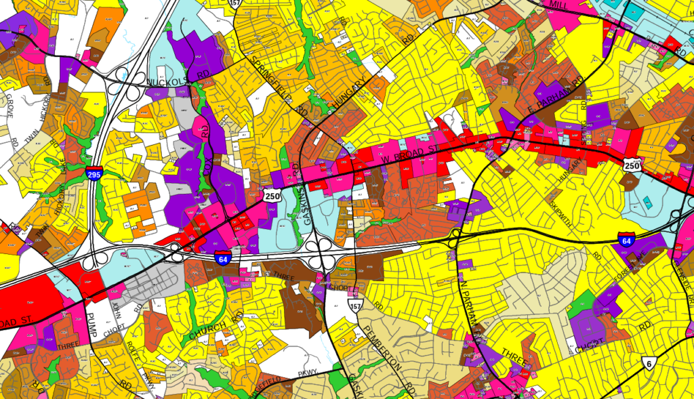

1 Introduction
1.1 What is the Virginia Zoning Atlas?
A zoning atlas is a large-scale, interactive map which displays municipal land use ordinance zones, or zoning districts, across all localities in a region, state, or country. The Virginia Zoning Atlas is part of the National Zoning Atlas Research Collaborative, which seeks to standardize zoning ordinances across the nation to show how restrictive land use policies are affecting housing production and affordability.
1.2 Why is HousingForward Virginia doing this?
HousingForward Virginia (HFV) has been a go-to resource for governments, non-profits, and private companies with a vested interest in affordable housing across the Commonwealth. Sourcebook, our free, online compendium of demographic and housing data, has been used to better understand housing needs. In addition, our Inclusionary Zoning Guidebook has helped educate Virginians on the opportunities and challenges of implementing inclusionary zoning. Furthermore, our contract research work has taken us across Virginia to understand the discussions and debates over zoning and the overall housing needs of Virginians.
The growing focus on land use practices and their impact on affordable housing has presented HFV with an opportunity to help Virginians better understand this connection. The VZA is aligned with our mission to provide free and impactful resources to better understand housing needs. It is our hope that the VZA will provide opportunities to others interested in exploring Virginia’s land use patterns and the zoning regulations that have created them.
Not sure about what zoning is? Or how it impacts housing affordability? Or even why you should care?
ZONED IN is HousingForward Virginia’s zoning education initiative, which focuses on breaking down what zoning is in simple language, while also exploring the ways in which zoning impacts housing, livability, and equity.
Visit our ZONED IN Landing Page here to learn more.
1.2.1 How restrictive are zoning regulations in Virginia?

The purpose of the Virginia Zoning Atlas is to answer major questions related to land use practices and housing development in the Commonwealth. By standardizing information about zoning districts across Virginia, HFV will be able to answer several questions important to the work of our audience, including:
- How much developable land is dedicated to single-family detached housing?
- Where in Virginia is it easiest to build small homes or starter homes?
- How restrictive is land use policy in Virginia for the development of two-family homes? Accessory dwelling units? Multifamily buildings?
- How much developable land in Virginia prevents the placement of manufactured homes on single lots or in parks?
The VZA will allow for comparisons across jurisdictions and open the door to investigations of land use policies beyond just housing. With standardization, we can better understand patterns at the regional and statewide levels.
As many localities take on zoning reform, the VZA can be used to track zoning over time to see how some Virginia jurisdictions may become less restrictive with their zoning.
1.3 Who is the Virginia Zoning Atlas for?
The current iteration of the zoning analysis methodology is geared towards residential uses. Therefore, the atlas will largely benefit those who have an interest in housing and planning (e.g. planners, local and state officials, developers, builders, housing nonprofits, advocates, land use attorneys, etc.). The map will detail where different types of residential uses are allowed by-right, required to have a public approval process, or prohibited.
1.4 Zoning Atlas Impact
Zoning atlases have been gaining national recognition to help local and state officials make better policy decisions that are informed by data. A Law360 article highlighted the work of The Frontier Institute and the Montana Zoning Atlas, specifically quoting state legislators who cited the atlas as helping to draft and pass statewide zoning reform.
NOVOGRADAC also pointed to zoning atlas projects as an important tool for policy analysis in support of reform at the local and state-level.